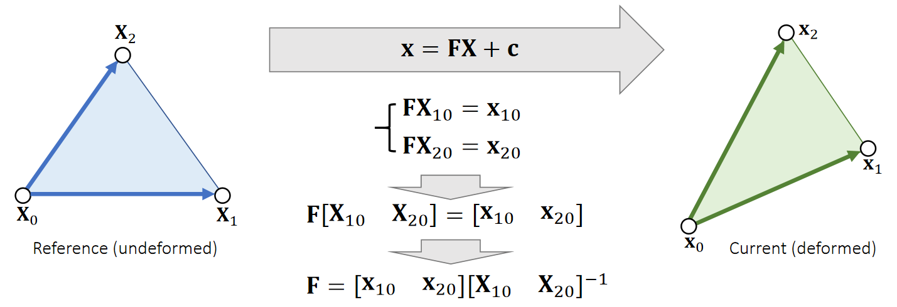
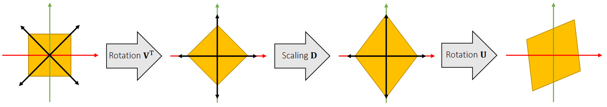
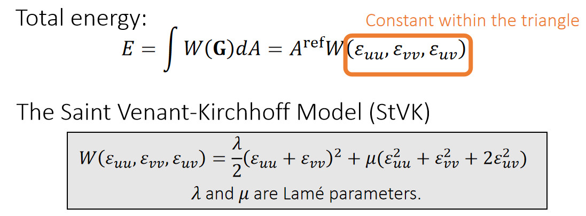
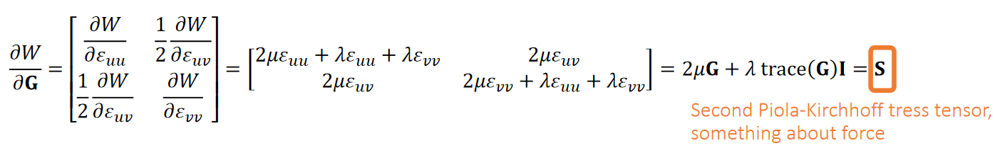
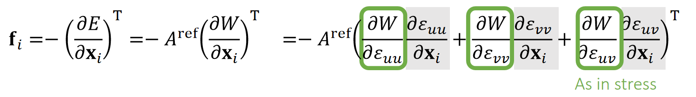
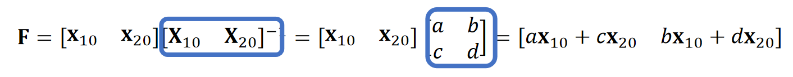
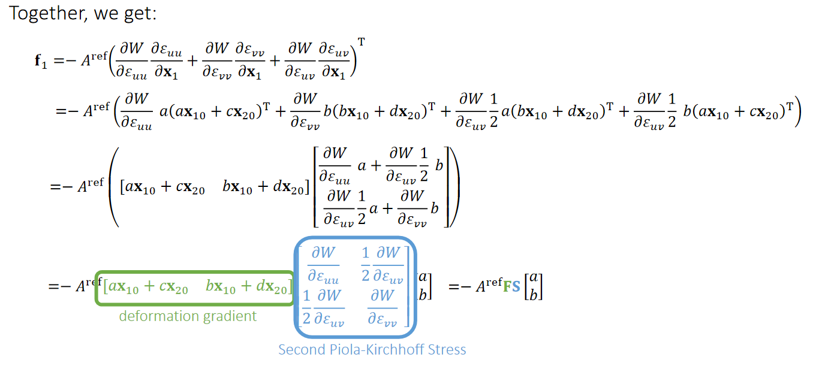

P3
FEM
Lecture 3 [31:48]
把空间分成极小的 element，例如三角形，四面体。
用 FEM 做仿真仍然是用 \(w = \frac{1}{2h^2} || x - y ||_M^2 + E(x)\) 的思路。
关键在于 \(E(x)\) 的定义方式。
弹簧系统：用弹簧势能来定义\(E(x)\)。
PBD/PD/XPD 用约束来定义 \(E(x)\)。
FEM/FVM 的能量来自材料对形变的响应，所以需要对材料建模，根据材料特性构造 \(E(x)\)。
$$
\text{deformed mesh} \rightarrow \overset{形变}F {\rightarrow} \overset{能量密度}ψ{\rightarrow}\overset{能量}U{\rightarrow}力\rightarrow速度\rightarrow位置
$$
如果采用隐式积分，则通过最小化 \(W\) 解出下一时刻的速度和位置。
Linear Finite Element Method
P4
The Linear FEM Assumption
✅ 假设：三角形的形变是均匀的
In a nutshell, linear FEM assumes that for any point \(\mathbf{X}\) in the reference triangle, its deformed correspondence is: \(\mathbf{x=FX+c}\).
✅ reference triangle：三角形处于没有发生形变的静止的状态。
✅ \(\mathbf{X}\)和\(\mathbf{x}\)可以分别是 reference 和 deformed 三角形的顶点或内部点，公式都同样适用。

一个向量对另一个向量求导，得到的是 Jacobian 矩阵。由于是均匀形变，在一个三角形内部，\(\mathbf{F}\) 是一致的。
For any vector between two points, we can use F to convert it from reference to deformed:
$$
\mathbf{x} _{ba}=\mathbf{x} _b−\mathbf{x} _a=\mathbf{FX} _b+\mathbf{c} −\mathbf{FX} _a−\mathbf{c} =\mathbf{FX} _{ba}.
$$
\(J=\mathrm{det} (\mathbf{F} )\) 表示形变后的面积变化
弹性势能：
$$
\mathbf{U} (e)= \int _ e \psi (\mathbf{F} (x))dx=\mathbf{V} _e\psi (\mathbf{F} _e)
$$
\(\psi\) 是能量密度函数
如果采用显示积分，接下来根据能量计算力，再仿真。如果采用隐示积分，接下来基于能量做优化。
弹性势能量密度函数关于体积的积分，对于一个元素来说，\(\mathbf{F}\) 是常数，\(\psi (\mathbf{F})\) 也是常用数。
\(\Psi(F)\) 的形式与具体的材料有关。
P5
计算Deformation Gradient
Therefore, we can calculate the deformation gradient by edge vectors.

公式第二项只与 reference 有关，可以预计算。
Problem: \(\mathbf{F}\) is related to deformation, but it contains rotation.
✅ 期望\(\mathbf{F}\)只包含形变量、不包含平移和旋转、因为刚体运动不应该有形变，所以要把形变提取出来。
✅平移已经在\(\mathbf{c}\)里面了，所以只需考虑旋转。
P6
从F中去除旋转
回顾SVD分解
Ideally, we need a tensor to describe shape deformation only. Recall that SVD gives \(\mathbf{F=UDV^T}\), where only \(\mathbf{V^T}\) and \(\mathbf{D}\) are relevant to deformation.

✅ \(\mathbf{V^T}\) 看上去是旋转、实际上是为了确定形变的方向、 \(\mathbf{U}\) 才是真正的旋转
✅ 目的：把\(\mathbf{F}\)中的\(\mathbf{U}\)去掉、可以先做 \(\mathbf{SVD}\) 分解再把\(\mathbf{U}\)去掉。但本文使用了更简单的方法
Green Strain
So we get rid of \(\mathbf{U}\) as: \(\mathbf{G} =\frac{1}{2} (\mathbf{F^TF−I} )=\frac{1}{2} (\mathbf{VD} ^2\mathbf{V} ^\mathbf{T} −\mathbf{I} )=\begin{bmatrix} \varepsilon _{uu} & \varepsilon _{uv}\\ \varepsilon _{uv} & \varepsilon _{vv} \end{bmatrix}\), Green strain.
✅ \(\mathbf{G}\) 是一个描述物体形变的有无和大小矩阵，且与关旋转
- If no deformation, \(\mathbf{G=0}\); if deformation increases, ||\(\mathbf{G}\)|| increases.
- Three deformation modes: \(\varepsilon _{uu}\), \(\varepsilon _{vv}\) and \(\varepsilon _{uv}\).
- \(\mathbf{G}\) is rotation invariant: if additional rotation \(\mathbf{R}\), then deformation gradient is \(\mathbf{RF}\) but green strain is the same: \(\mathbf{G} =\frac{1}{2} (\mathbf{F^TR^TRF−I} )=\frac{1}{2} (\mathbf{VD} ^2\mathbf{V} ^\mathbf{T} −\mathbf{I} )\).
P7
弹性体的弹性势能
前面提到的能量公式是一种通用的形式。这里的能量计算过程是一种具体的广泛使用的公式。
Let \(\mathbf{G}\) be the the green strain describing deformation. We consider the energy density per reference area as: \(W (\mathbf{G})\).


✅用形变程度来定义能量。\(W\)代表单位面积上的能量，因此称为能量密度。总能量为单位能量\(\mathbf{X}\)面积.
✅ \(A^{ref}\) 为 reference status 下三角形的面积
✅ StVK是一种经典的能量密度函数（Strain Energy Density Function）， 在力学中不常用，但在图形学中很常用、原因是简单

✅ S 是一个与力有关的物理量。会在FVM内容中进一步解释。
✅ 能量对位移求导是力。形变是一种位移。能量密度对位移求导是一种类似于力的密度的量。
P8
计算Forces
Given everything we have, we can now calculate the forces.
✅ 力是形变施加到顶点上的力

✅ 绿色部分是上一页S中的内容、灰色部分将在下一页推导。
P9
方法一
Recall that,

❗ \(\mathbf{F}\)不是力，是deformation gradient．
✅ 假设a,b,c,d是形变后的顶点。
By definition,
$$
\mathbf{G} =\frac{1}{2} (\mathbf{F^TF−I} )=\begin{bmatrix}
\frac{1}{2}(a\mathbf{x} _{10}+c\mathbf{x} _{20})^\mathbf{T} (a\mathbf{x} _{10}+c\mathbf{x} _{20})−\frac{1}{2} & \frac{1}{2}(a\mathbf{x} _{10}+c\mathbf{x} _{20})^\mathbf{T} (b\mathbf{x} _{10}+d\mathbf{x} _{20})\\
\frac{1}{2}(a\mathbf{x} _{10}+c\mathbf{x} _{20})^\mathbf{T} (b\mathbf{x} _{10}+d\mathbf{x} _{20}) & \frac{1}{2}(b\mathbf{x} _{10}+d\mathbf{x} _{20})^\mathbf{T} (b\mathbf{x} _{10}+d\mathbf{x} _{20})−\frac{1}{2}
\end{bmatrix}
$$
So:
$$ \frac{∂\varepsilon _{uu}}{∂\mathbf{x} _1}=a(a\mathbf{x} _{10}+c\mathbf{x} _{20})^\mathbf{T} \quad\quad \frac{∂\varepsilon _{vv}}{∂\mathbf{x} _1}=b(b\mathbf{x} _{10}+d\mathbf{x} _{20})^\mathbf{T} \quad\quad \frac{∂\varepsilon _{uv}}{∂\mathbf{x} _1}=\frac{1}{2} a(b\mathbf{x} _{10}+d\mathbf{x} _{20})^\mathbf{T} +\frac{1}{2} b(a\mathbf{x} _{10}+c\mathbf{x} _{20})^\mathbf{T} $$
$$ \frac{∂\varepsilon _{uu}}{∂\mathbf{x} _2}=c(a\mathbf{x} _{10}+c\mathbf{x} _{20})^\mathbf{T} \quad\quad \frac{∂\varepsilon _{vv}}{∂\mathbf{x} _2}=d(b\mathbf{x} _{10}+d\mathbf{x} _{20})^\mathbf{T} \quad\quad \frac{∂\varepsilon _{uv}}{∂\mathbf{x} _2}=\frac{1}{2} c(b\mathbf{x} _{10}+d\mathbf{x} _{20})^\mathbf{T} +\frac{1}{2} d(a\mathbf{x} _{10}+c\mathbf{x} _{20})^\mathbf{T} $$
✅ \(\mathbf{x}\)为current边的矩阵，\(\mathbf{r}\)为reference边的矩阵。
P10
方法二

✅ 把 P9 代入 P8 得到 P10
✅ 上一页推导方法从定义出来，过程简单，但很容易出错。这里用矩阵来简化计算，得到同样的结果。
P11
结论
In conclusion, we have:
$$ \mathbf{f} _1=−A^{\mathrm{ref} }\mathbf{FS} \begin{bmatrix} a\\ b \end{bmatrix} \quad\quad \mathbf{f} _2=−A^{\mathrm{ref} }\mathbf{FS} \begin{bmatrix} c\\ d \end{bmatrix} $$
$$ \begin{bmatrix} \mathbf{f} _1 &\mathbf{f} _2 \end{bmatrix}= − A ^{\mathrm{ref} }\mathbf{FS} \begin{bmatrix} \mathbf{X} _{10} & \mathbf{X} _{20} \end{bmatrix}^\mathbf{−T} $$
✅ \(f_0=-f_1-f_2\)
P12
Implementations
🔎 Volino et al. 2009. A simple approach to nonlinear tensile stiffness for accurate cloth simulation. TOG
Only talks about cloth (2D reference -> 3D deformation)
- What about tetrahedron (3D reference -> 3D deformation)?
- Same idea, but everything is now in 3D.
- Deformation gradient \(\mathbf{F} \in \mathbf{R} ^{3×3}\)
- Green strain \(\mathbf{G} \in \mathbf{R} ^{3×3}\)
- Stress tensor \(\mathbf{S} \in \mathbf{R} ^{3×3}\)
- Forces \(\mathbf{F}_i \in \mathbf{R} ^3\)
FEM 不擅长处理自碰撞。
隐式积分
Recall backward Euler time integration:
$$ [\mathbf{I} -\Delta t^2\mathbf{M} ^{-1}\frac{\partial \mathbf{f} }{\partial \mathbf{x} }(\mathbf{x} _t)]\mathbf{v} _{t+1}=\mathbf{v} _t+\Delta t\mathbf{M} ^{-1}\mathbf{f} (\mathbf{x} _t) $$
Want implicit time integration? Compute force differentials \(\frac{\partial \mathbf{f} }{\partial \mathbf{x} } =\frac{\partial^2\Psi }{\partial \mathbf{F} ^2} \)
Question: in both explicit and implicit schemes, how to compute \(m_i\)? Use mass lumping (or any other convenient approximation you want...)
本文出自CaterpillarStudyGroup，转载请注明出处。
https://caterpillarstudygroup.github.io/GAMES103_mdbook/